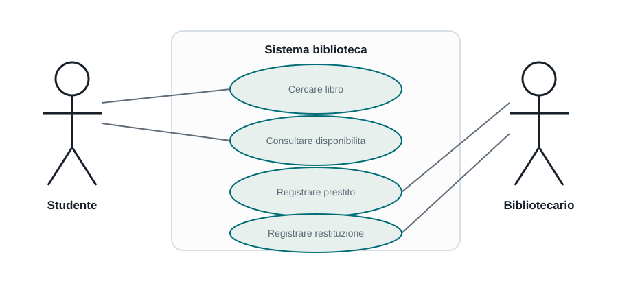
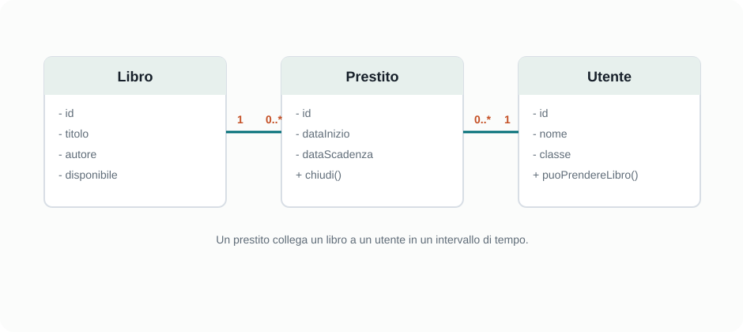

Capitoletto 2
Modellazione e documentazione
Un modello descrive un sistema prima o durante la costruzione. La documentazione conserva le decisioni importanti e permette a studenti, sviluppatori e utenti di capire come funziona il software.
Obiettivi della lezione
- Capire perché si modellano sistemi complessi.
- Distinguere specifiche, modelli e documentazione.
- Leggere un semplice diagramma dei casi d'uso.
- Riconoscere le informazioni essenziali di un diagramma delle classi.
- Scrivere documentazione tecnica utile, sintetica e aggiornata.
Specifiche: il contratto del sistema
Le specifiche descrivono in modo preciso che cosa il software deve fare. Sono un riferimento comune tra chi commissiona il lavoro, chi progetta, chi programma, chi testa e chi usera il sistema.
Una specifica efficace non deve essere ambigua. Se due persone la leggono, dovrebbero arrivare alla stessa interpretazione. Per questo conviene usare frasi controllabili e verificabili.
| Frase debole | Frase migliore |
|---|---|
| Il sistema deve essere veloce. | La ricerca di un libro deve mostrare i risultati entro due secondi con almeno 10.000 record. |
| L'accesso deve essere sicuro. | Solo gli utenti autenticati con ruolo bibliotecario possono modificare i prestiti. |
| La schermata deve essere semplice. | La registrazione di un prestito deve richiedere al massimo tre campi obbligatori. |
perché usare i modelli
Un sistema software può diventare difficile da comprendere perché contiene dati, regole, interfacce, utenti, controlli e comunicazioni con altri sistemi. Un modello riduce la complessità concentrandosi su un punto di vista.
| Modello | Risponde alla domanda | Esempio |
|---|---|---|
| Casi d'uso | Chi usa il sistema e per fare cosa? | Studente consulta catalogo, bibliotecario registra prestito. |
| Classi | Quali entita e relazioni descrivono il dominio? | Libro, Utente, Prestito. |
| Sequenza | In quale ordine collaborano gli oggetti o componenti? | Utente invia richiesta, server controlla dati, database salva. |
| attività | Quali passaggi compongono una procedura? | Dal controllo disponibilità alla conferma del prestito. |
Diagramma dei casi d'uso

Il diagramma dei casi d'uso rappresenta gli attori esterni e le funzionalità che usano. Non descrive il codice interno, ma aiuta a delimitare il sistema e a capire quali funzioni sono necessarie.
| Elemento | Significato |
|---|---|
| Attore | Ruolo esterno che interagisce con il sistema, per esempio Studente o Bibliotecario. |
| Caso d'uso | Funzione osservabile dall'esterno, per esempio Cercare libro o Registrare prestito. |
| Confine del sistema | Indica quali funzionalità appartengono al software progettato. |
Diagramma delle classi
Il diagramma delle classi rappresenta le entita principali del sistema, i loro attributi, le operazioni e le relazioni. E molto utile quando il software gestisce dati strutturati e regole di dominio.

Per leggere un diagramma delle classi bisogna chiedersi: quali oggetti esistono nel dominio? Quali informazioni conservano? Quali operazioni possono compiere? Quali relazioni hanno tra loro?
Documentazione tecnica
La documentazione tecnica spiega come è organizzato il software. Deve aiutare chi dovrà modificarlo, installarlo, testarlo o integrarlo con altri sistemi. Non deve essere un romanzo: deve contenere le informazioni che evitano equivoci e perdite di tempo.
| Documento | Contenuto tipico | Destinatario |
|---|---|---|
| Documento dei requisiti | Funzioni richieste, vincoli, priorita, criteri di accettazione. | Team, docente, committente. |
| Documento di progetto | Architettura, moduli, dati, interfacce, scelte tecniche. | Sviluppatori e manutentori. |
| Manuale utente | Procedure per usare il sistema e risolvere problemi comuni. | Utenti finali. |
| README | Descrizione del progetto, installazione, avvio, struttura delle cartelle. | Chi apre il repository. |
Documentazione del codice
Il codice si documenta prima di tutto con una buona struttura: nomi chiari, funzioni brevi, responsabilità separate e file organizzati. I commenti servono quando il codice non basta a spiegare una scelta, un vincolo o una regola particolare.
// Utile: spiega il motivo della scelta
// La prenotazione termina alle 18:00 perché il laboratorio chiude a quell'ora.
// Poco utile: ripete quello che il codice dice già
// Aumenta contatore di 1
contatore = contatore + 1;Esercizi guidati
- Scrivi tre specifiche verificabili per un'app di prenotazione del laboratorio.
- Individua gli attori di un sistema per gestire verifiche e interrogazioni.
- Disegna un semplice diagramma dei casi d'uso per la biblioteca scolastica.
- Elenca le classi principali di un'app per gestire prestiti di libri.
- Scrivi l'indice di un README per un progetto realizzato in laboratorio.
Domande con risposta semplice
A che cosa serve un modello?
Serve a rappresentare un aspetto del sistema in modo più semplice, così da capirlo, discuterlo e correggerlo prima o durante lo sviluppo.
Che cosa mostra un diagramma dei casi d'uso?
Mostra gli attori esterni e le funzioni principali che essi usano nel sistema.
La documentazione sostituisce il codice ben scritto?
No. La documentazione aiuta, ma il codice deve comunque avere struttura, nomi e responsabilità chiari.
perché la documentazione deve essere aggiornata?
Perché una documentazione vecchia può far prendere decisioni sbagliate e rendere più difficile la manutenzione.
Per ripassare
Collega ogni documento al suo scopo: requisiti per dire cosa serve, modelli per ragionare sulla soluzione, documentazione tecnica per mantenere il sistema, manuale utente per spiegare l'uso.